Summary
This experiment investigates tidal turbine placement. Box-Behnken design to maximize power output and minimize marine life impact by tuning turbine depth, rotor diameter, and cut-in speed.
The design varies 3 factors: depth m (m), ranging from 5 to 25, rotor m (m), ranging from 5 to 20, and cutin ms (m/s), ranging from 0.5 to 2.0. The goal is to optimize 2 responses: annual mwh (MWh) (maximize) and impact score (pts) (minimize). Fixed conditions held constant across all runs include site = tidal_channel, tidal range = 4m.
A Box-Behnken design was chosen because it efficiently fits quadratic models with 3 continuous factors while avoiding extreme corner combinations — requiring only 15 runs instead of the 8 needed for a full factorial at two levels.
Quadratic response surface models were fitted to capture potential curvature and factor interactions. The RSM contour plots below visualize how pairs of factors jointly affect each response.
Key Findings
For annual mwh, the most influential factors were cutin ms (40.3%), rotor m (39.0%), depth m (20.7%). The best observed value was 765.0 (at depth m = 15, rotor m = 12.5, cutin ms = 1.25).
For impact score, the most influential factors were cutin ms (44.6%), rotor m (33.6%), depth m (21.8%). The best observed value was 2.1 (at depth m = 15, rotor m = 12.5, cutin ms = 1.25).
Recommended Next Steps
- Run confirmation experiments at the predicted optimal settings to validate the model.
- Consider whether any fixed factors should be varied in a future study.
Experimental Setup
Factors
| Factor | Low | High | Unit |
|---|
depth_m | 5 | 25 | m |
rotor_m | 5 | 20 | m |
cutin_ms | 0.5 | 2.0 | m/s |
Fixed: site = tidal_channel, tidal_range = 4m
Responses
| Response | Direction | Unit |
|---|
annual_mwh | ↑ maximize | MWh |
impact_score | ↓ minimize | pts |
Configuration
{
"metadata": {
"name": "Tidal Turbine Placement",
"description": "Box-Behnken design to maximize power output and minimize marine life impact by tuning turbine depth, rotor diameter, and cut-in speed"
},
"factors": [
{
"name": "depth_m",
"levels": [
"5",
"25"
],
"type": "continuous",
"unit": "m"
},
{
"name": "rotor_m",
"levels": [
"5",
"20"
],
"type": "continuous",
"unit": "m"
},
{
"name": "cutin_ms",
"levels": [
"0.5",
"2.0"
],
"type": "continuous",
"unit": "m/s"
}
],
"fixed_factors": {
"site": "tidal_channel",
"tidal_range": "4m"
},
"responses": [
{
"name": "annual_mwh",
"optimize": "maximize",
"unit": "MWh"
},
{
"name": "impact_score",
"optimize": "minimize",
"unit": "pts"
}
],
"settings": {
"operation": "box_behnken",
"test_script": "use_cases/253_tidal_energy/sim.sh"
}
}
Experimental Matrix
The Box-Behnken Design produces 15 runs. Each row is one experiment with specific factor settings.
| Run | depth_m | rotor_m | cutin_ms |
|---|
| 1 | 15 | 5 | 0.5 |
| 2 | 15 | 12.5 | 1.25 |
| 3 | 25 | 12.5 | 2 |
| 4 | 25 | 12.5 | 0.5 |
| 5 | 15 | 12.5 | 1.25 |
| 6 | 15 | 12.5 | 1.25 |
| 7 | 5 | 12.5 | 2 |
| 8 | 25 | 5 | 1.25 |
| 9 | 15 | 5 | 2 |
| 10 | 25 | 20 | 1.25 |
| 11 | 5 | 12.5 | 0.5 |
| 12 | 15 | 20 | 2 |
| 13 | 5 | 5 | 1.25 |
| 14 | 5 | 20 | 1.25 |
| 15 | 15 | 20 | 0.5 |
Step-by-Step Workflow
1
Preview the design
$ doe info --config use_cases/253_tidal_energy/config.json
2
Generate the runner script
$ doe generate --config use_cases/253_tidal_energy/config.json \
--output use_cases/253_tidal_energy/results/run.sh --seed 42
3
Execute the experiments
$ bash use_cases/253_tidal_energy/results/run.sh
4
Analyze results
$ doe analyze --config use_cases/253_tidal_energy/config.json
5
Get optimization recommendations
$ doe optimize --config use_cases/253_tidal_energy/config.json
6
Multi-objective optimization
With 2 competing responses, use --multi to find the best compromise via Derringer–Suich desirability.
$ doe optimize --config use_cases/253_tidal_energy/config.json --multi
7
Generate the HTML report
$ doe report --config use_cases/253_tidal_energy/config.json \
--output use_cases/253_tidal_energy/results/report.html
Features Exercised
| Feature | Value |
|---|
| Design type | box_behnken |
| Factor types | continuous (all 3) |
| Arg style | double-dash |
| Responses | 2 (annual_mwh ↑, impact_score ↓) |
| Total runs | 15 |
Analysis Results
Generated from actual experiment runs using the DOE Helper Tool.
Response: annual_mwh
Top factors: cutin_ms (40.3%), rotor_m (39.0%), depth_m (20.7%).
ANOVA
| Source | DF | SS | MS | F | p-value |
|---|
| Source | DF | SS | MS | F | p-value |
| depth_m | 2 | 14298.2333 | 7149.1167 | 0.162 | 0.8530 |
| rotor_m | 2 | 49526.9833 | 24763.4917 | 0.562 | 0.5912 |
| cutin_ms | 2 | 63145.9833 | 31572.9917 | 0.716 | 0.5175 |
| Lack | of | Fit | 6 | 207763.8667 | 34627.3111 |
| Pure | Error | 2 | 88172.6667 | | |
| Error | 8 | 295936.5333 | 44086.3333 | | |
| Total | 14 | 422907.7333 | 30207.6952 | | |
Pareto Chart

Main Effects Plot

Normal Probability Plot of Effects
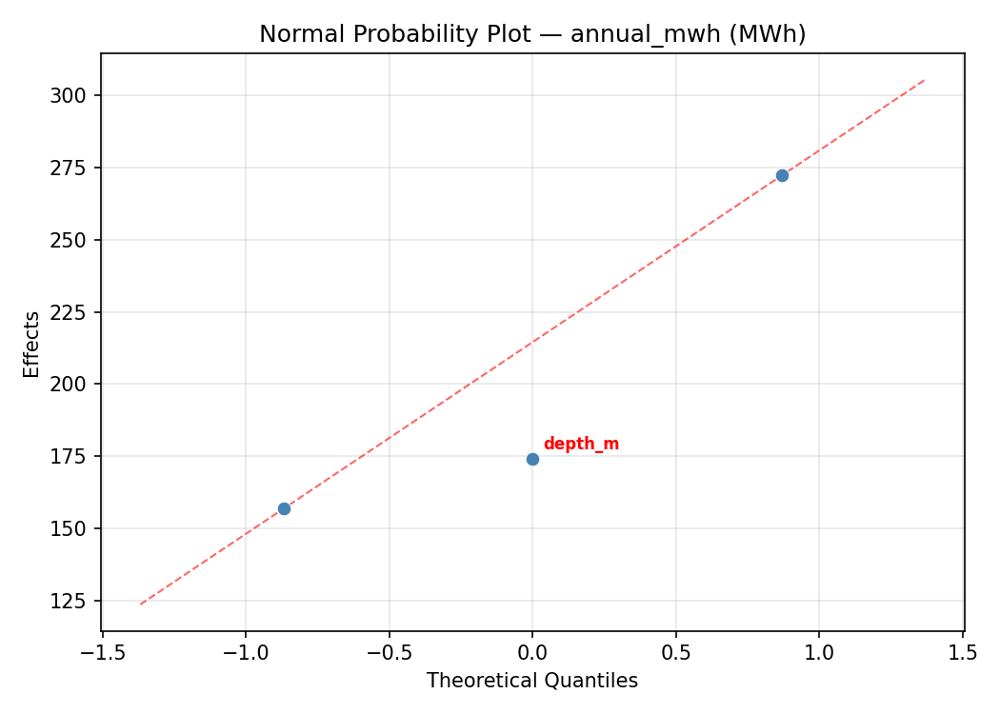
Half-Normal Plot of Effects
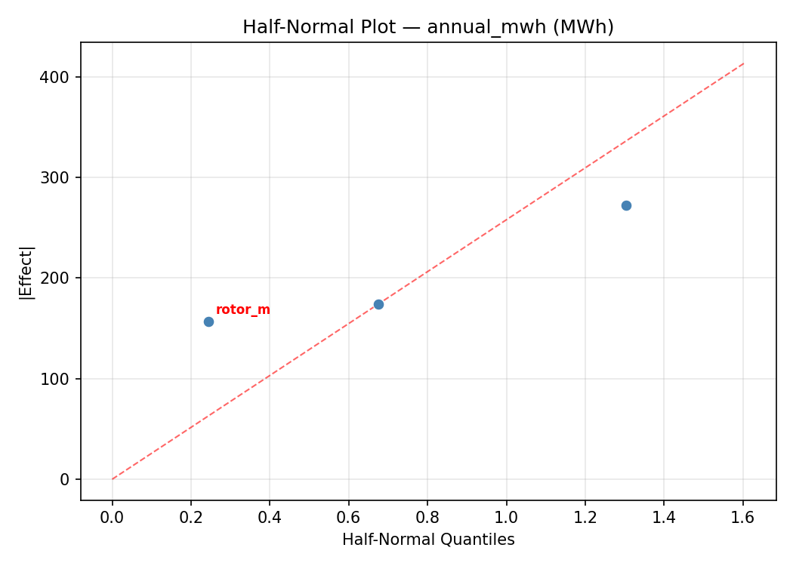
Model Diagnostics
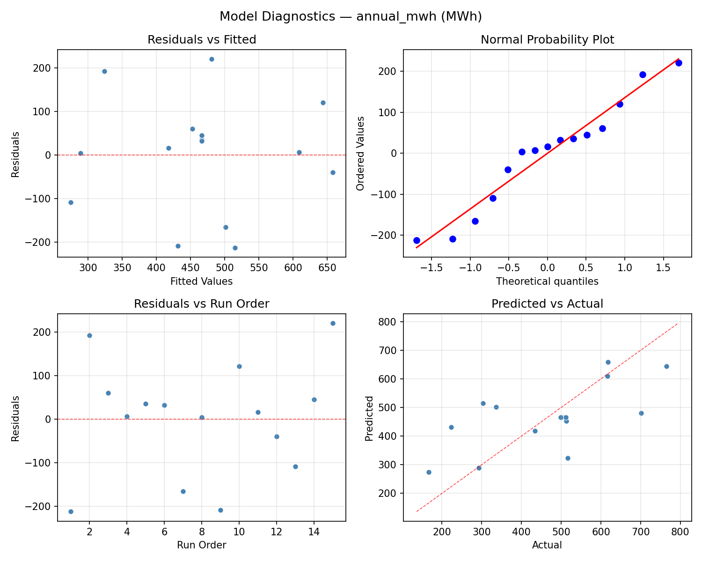
Response: impact_score
Top factors: cutin_ms (44.6%), rotor_m (33.6%), depth_m (21.8%).
ANOVA
| Source | DF | SS | MS | F | p-value |
|---|
| Source | DF | SS | MS | F | p-value |
| depth_m | 2 | 1.3013 | 0.6506 | 0.556 | 0.5941 |
| rotor_m | 2 | 2.9127 | 1.4563 | 1.245 | 0.3383 |
| cutin_ms | 2 | 5.4680 | 2.7340 | 2.337 | 0.1588 |
| Lack | of | Fit | 6 | 9.3153 | 1.5526 |
| Pure | Error | 2 | 2.3400 | | |
| Error | 8 | 11.6553 | 1.1700 | | |
| Total | 14 | 21.3373 | 1.5241 | | |
Pareto Chart
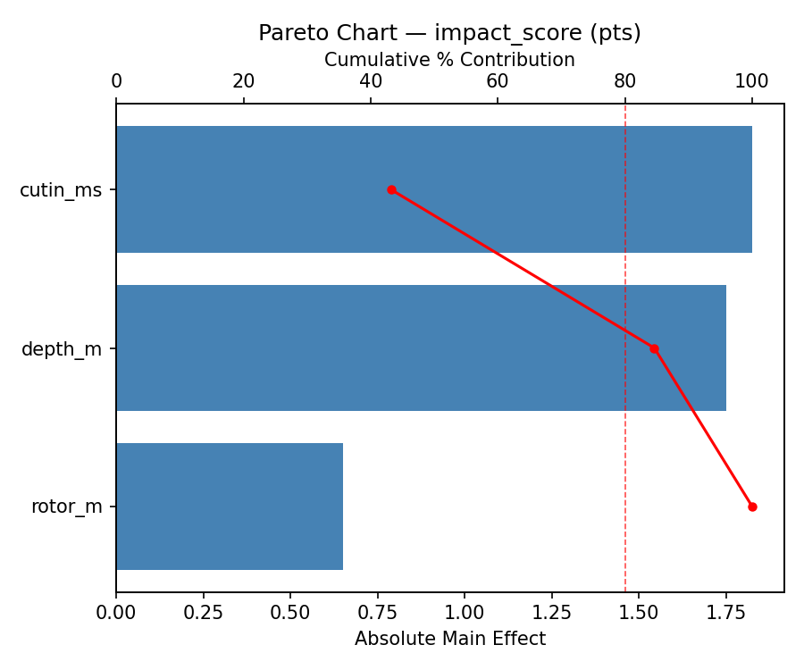
Main Effects Plot
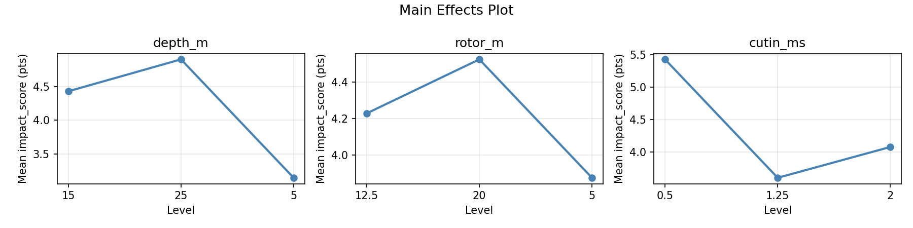
Normal Probability Plot of Effects
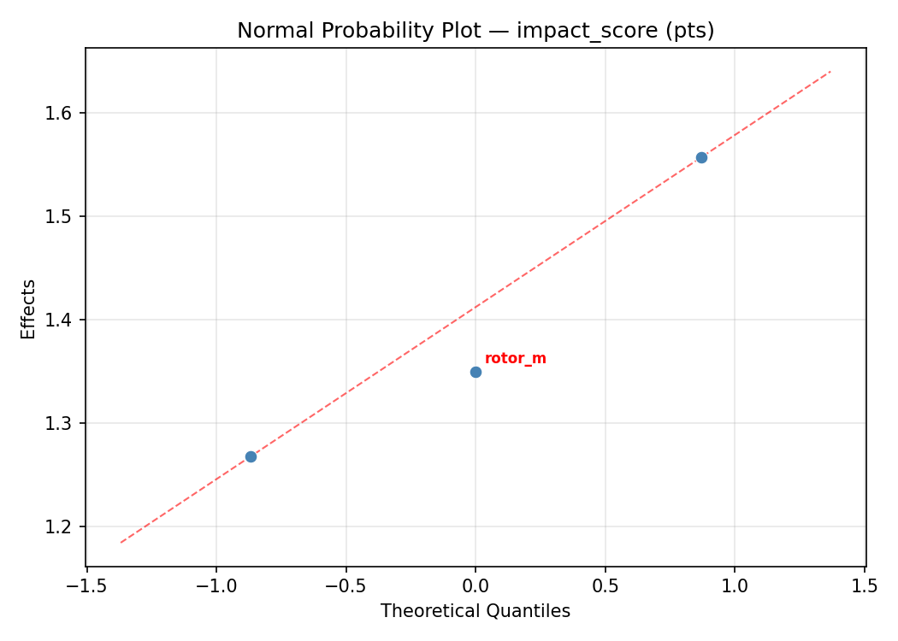
Half-Normal Plot of Effects
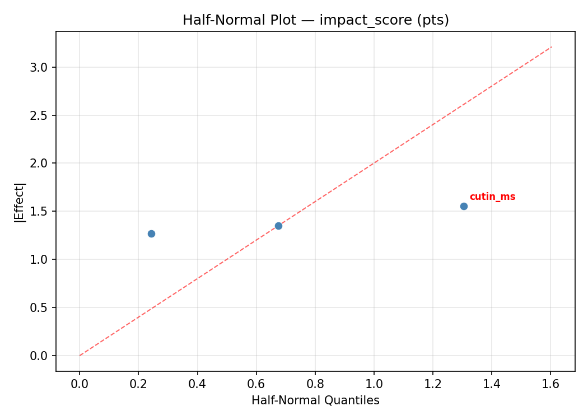
Model Diagnostics
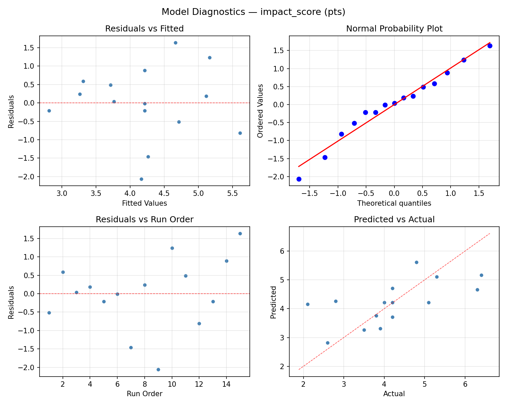
Response Surface Plots
3D surfaces fitted with quadratic RSM. Red dots are observed data points.
annual mwh depth m vs cutin ms

annual mwh depth m vs rotor m
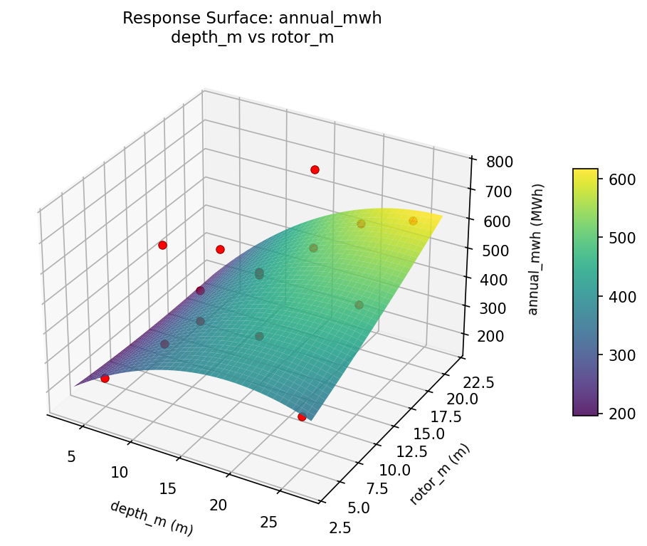
annual mwh rotor m vs cutin ms
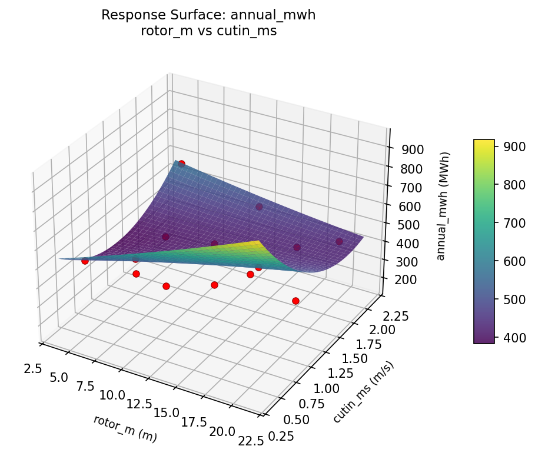
impact score depth m vs cutin ms
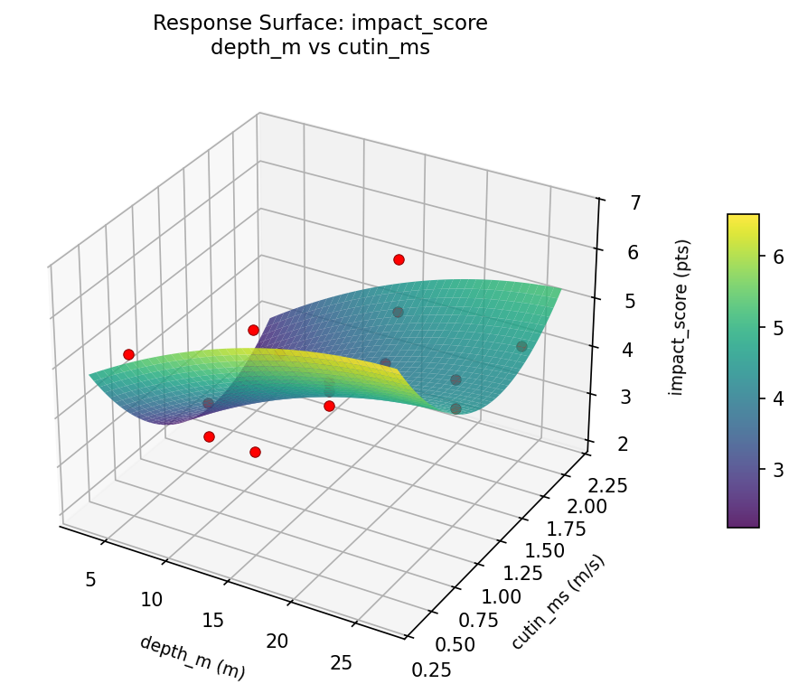
impact score depth m vs rotor m

impact score rotor m vs cutin ms

Multi-Objective Optimization
When responses compete, Derringer–Suich desirability finds the best compromise.
Each response is scaled to a 0–1 desirability, then combined via a weighted geometric mean.
Overall Desirability
D = 0.5858
Per-Response Desirability
| Response | Weight | Desirability | Predicted | Dir |
|---|
annual_mwh |
1.0 |
|
513.00 0.5721 513.00 MWh |
↑ |
impact_score |
1.5 |
|
3.80 0.5951 3.80 pts |
↓ |
Recommended Settings
| Factor | Value |
|---|
depth_m | 15 m |
rotor_m | 12.5 m |
cutin_ms | 1.25 m/s |
Source: from observed run #3
Trade-off Summary
Sacrifice = how much worse than single-objective best.
| Response | Predicted | Best Observed | Sacrifice |
|---|
impact_score | 3.80 | 2.10 | +1.70 |
Top 3 Runs by Desirability
| Run | D | Factor Settings |
|---|
| #2 | 0.5751 | depth_m=15, rotor_m=5, cutin_ms=2 |
| #5 | 0.5539 | depth_m=5, rotor_m=12.5, cutin_ms=0.5 |
Model Quality
| Response | R² | Type |
|---|
impact_score | 0.0268 | linear |
Full Multi-Objective Output
============================================================
MULTI-OBJECTIVE OPTIMIZATION
Method: Derringer-Suich Desirability Function
============================================================
Overall desirability: D = 0.5858
Response Weight Desirability Predicted Direction
---------------------------------------------------------------------
annual_mwh 1.0 0.5721 513.00 MWh ↑
impact_score 1.5 0.5951 3.80 pts ↓
Recommended settings:
depth_m = 15 m
rotor_m = 12.5 m
cutin_ms = 1.25 m/s
(from observed run #3)
Trade-off summary:
annual_mwh: 513.00 (best observed: 765.00, sacrifice: +252.00)
impact_score: 3.80 (best observed: 2.10, sacrifice: +1.70)
Model quality:
annual_mwh: R² = 0.0551 (linear)
impact_score: R² = 0.0268 (linear)
Top 3 observed runs by overall desirability:
1. Run #3 (D=0.5858): depth_m=15, rotor_m=12.5, cutin_ms=1.25
2. Run #2 (D=0.5751): depth_m=15, rotor_m=5, cutin_ms=2
3. Run #5 (D=0.5539): depth_m=5, rotor_m=12.5, cutin_ms=0.5
Full Analysis Output
=== Main Effects: annual_mwh ===
Factor Effect Std Error % Contribution
--------------------------------------------------------------
cutin_ms 157.5000 44.8759 40.3%
rotor_m 152.2500 44.8759 39.0%
depth_m 81.0000 44.8759 20.7%
=== ANOVA Table: annual_mwh ===
Source DF SS MS F p-value
-----------------------------------------------------------------------------
depth_m 2 14298.2333 7149.1167 0.162 0.8530
rotor_m 2 49526.9833 24763.4917 0.562 0.5912
cutin_ms 2 63145.9833 31572.9917 0.716 0.5175
Lack of Fit 6 207763.8667 34627.3111 0.785 0.6540
Pure Error 2 88172.6667 44086.3333
Error 8 295936.5333 44086.3333
Total 14 422907.7333 30207.6952
=== Summary Statistics: annual_mwh ===
depth_m:
Level N Mean Std Min Max
------------------------------------------------------------
15 7 457.0000 175.1552 223.0000 701.0000
25 4 434.2500 262.9998 166.0000 765.0000
5 4 515.2500 75.3365 434.0000 616.0000
rotor_m:
Level N Mean Std Min Max
------------------------------------------------------------
12.5 7 482.0000 151.8684 293.0000 701.0000
20 4 376.7500 216.7816 166.0000 616.0000
5 4 529.0000 177.0254 336.0000 765.0000
cutin_ms:
Level N Mean Std Min Max
------------------------------------------------------------
0.5 4 465.7500 86.6425 336.0000 513.0000
1.25 7 524.0000 217.6924 166.0000 765.0000
2 4 366.5000 132.7918 223.0000 516.0000
=== Main Effects: impact_score ===
Factor Effect Std Error % Contribution
--------------------------------------------------------------
cutin_ms 1.4036 0.3188 44.6%
rotor_m 1.0571 0.3188 33.6%
depth_m 0.6857 0.3188 21.8%
=== ANOVA Table: impact_score ===
Source DF SS MS F p-value
-----------------------------------------------------------------------------
depth_m 2 1.3013 0.6506 0.556 0.5941
rotor_m 2 2.9127 1.4563 1.245 0.3383
cutin_ms 2 5.4680 2.7340 2.337 0.1588
Lack of Fit 6 9.3153 1.5526 1.327 0.4895
Pure Error 2 2.3400 1.1700
Error 8 11.6553 1.1700
Total 14 21.3373 1.5241
=== Summary Statistics: impact_score ===
depth_m:
Level N Mean Std Min Max
------------------------------------------------------------
15 7 4.0143 1.3558 2.1000 6.3000
25 4 4.0750 1.6317 2.6000 6.4000
5 4 4.7000 0.5831 4.2000 5.3000
rotor_m:
Level N Mean Std Min Max
------------------------------------------------------------
12.5 7 4.5571 0.9431 3.5000 6.3000
20 4 3.5000 1.4445 2.1000 5.3000
5 4 4.3250 1.5086 2.8000 6.4000
cutin_ms:
Level N Mean Std Min Max
------------------------------------------------------------
0.5 4 3.9250 0.9430 2.8000 5.1000
1.25 7 4.8286 1.3301 2.6000 6.4000
2 4 3.4250 0.9287 2.1000 4.2000
Optimization Recommendations
=== Optimization: annual_mwh ===
Direction: maximize
Best observed run: #10
depth_m = 15
rotor_m = 12.5
cutin_ms = 1.25
Value: 765.0
RSM Model (linear, R² = 0.0873, Adj R² = -0.1616):
Coefficients:
intercept +466.4667
depth_m +52.5000
rotor_m -30.0000
cutin_ms -31.0000
RSM Model (quadratic, R² = 0.1663, Adj R² = -1.3342):
Coefficients:
intercept +430.3333
depth_m +52.5000
rotor_m -30.0000
cutin_ms -31.0000
depth_m*rotor_m -14.0000
depth_m*cutin_ms +40.5000
rotor_m*cutin_ms -57.0000
depth_m^2 +49.0833
rotor_m^2 +31.5833
cutin_ms^2 -12.9167
Curvature analysis:
depth_m coef=+49.0833 convex (has a minimum)
rotor_m coef=+31.5833 convex (has a minimum)
cutin_ms coef=-12.9167 concave (has a maximum)
Notable interactions:
rotor_m*cutin_ms coef=-57.0000 (antagonistic)
depth_m*cutin_ms coef=+40.5000 (synergistic)
depth_m*rotor_m coef=-14.0000 (antagonistic)
Predicted optimum (from linear model, at observed points):
depth_m = 25
rotor_m = 12.5
cutin_ms = 0.5
Predicted value: 549.9667
Surface optimum (via L-BFGS-B, linear model):
depth_m = 25
rotor_m = 5
cutin_ms = 0.5
Predicted value: 579.9667
Model quality: Weak fit — consider adding center points or using a different design.
Factor importance:
1. depth_m (effect: 105.0, contribution: 46.3%)
2. cutin_ms (effect: 62.0, contribution: 27.3%)
3. rotor_m (effect: 60.0, contribution: 26.4%)
=== Optimization: impact_score ===
Direction: minimize
Best observed run: #9
depth_m = 15
rotor_m = 12.5
cutin_ms = 1.25
Value: 2.1
RSM Model (linear, R² = 0.0901, Adj R² = -0.1581):
Coefficients:
intercept +4.2133
depth_m +0.4875
rotor_m -0.0125
cutin_ms -0.0500
RSM Model (quadratic, R² = 0.2708, Adj R² = -1.0418):
Coefficients:
intercept +4.2333
depth_m +0.4875
rotor_m -0.0125
cutin_ms -0.0500
depth_m*rotor_m +0.0750
depth_m*cutin_ms +0.6000
rotor_m*cutin_ms -0.1500
depth_m^2 +0.3458
rotor_m^2 +0.2458
cutin_ms^2 -0.6292
Curvature analysis:
cutin_ms coef=-0.6292 concave (has a maximum)
depth_m coef=+0.3458 convex (has a minimum)
rotor_m coef=+0.2458 convex (has a minimum)
Notable interactions:
depth_m*cutin_ms coef=+0.6000 (synergistic)
Predicted optimum (from linear model, at observed points):
depth_m = 25
rotor_m = 12.5
cutin_ms = 0.5
Predicted value: 4.7508
Surface optimum (via L-BFGS-B, linear model):
depth_m = 5
rotor_m = 20
cutin_ms = 2
Predicted value: 3.6633
Model quality: Weak fit — consider adding center points or using a different design.
Factor importance:
1. depth_m (effect: 1.0, contribution: 49.4%)
2. cutin_ms (effect: 0.7, contribution: 36.5%)
3. rotor_m (effect: 0.3, contribution: 14.1%)